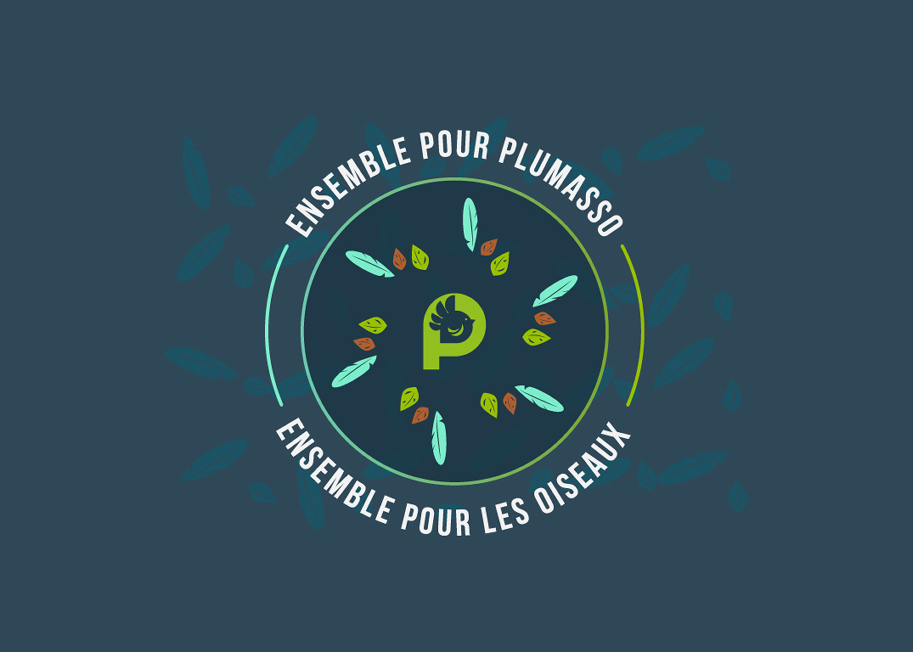
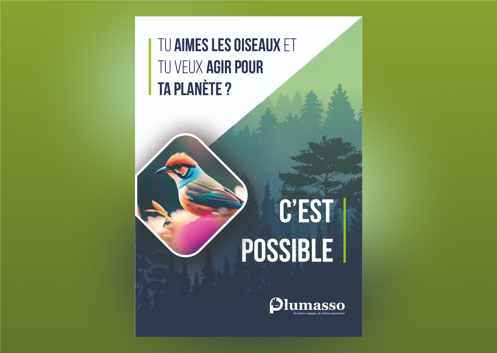
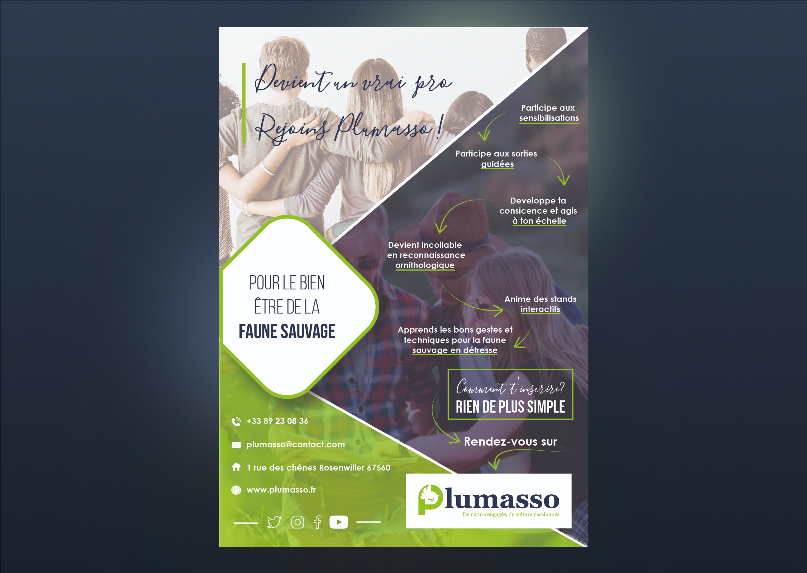

Client
Wild Code School
Scope
Charte graphique, supports de communications, création de site web
Année
2024/2025
Introduction
frictions
Malgré l’essor des événements culturels, l’expérience autour des festivals reste souvent fragmentée et peu optimisée, j’ai pu relevé de nombreux obstacles qui freinent à la fois les organisateurs, bénévoles et participants.
Ma solution
Une plateforme qui simplifie la découverte et la communication autour des festivals locaux et du monde, grâce à des recommandations personnalisée et une grande capacité de recherche




